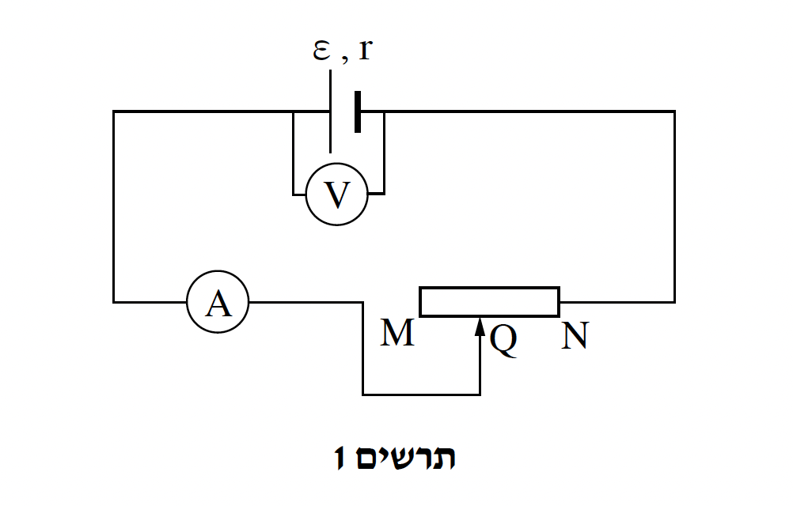
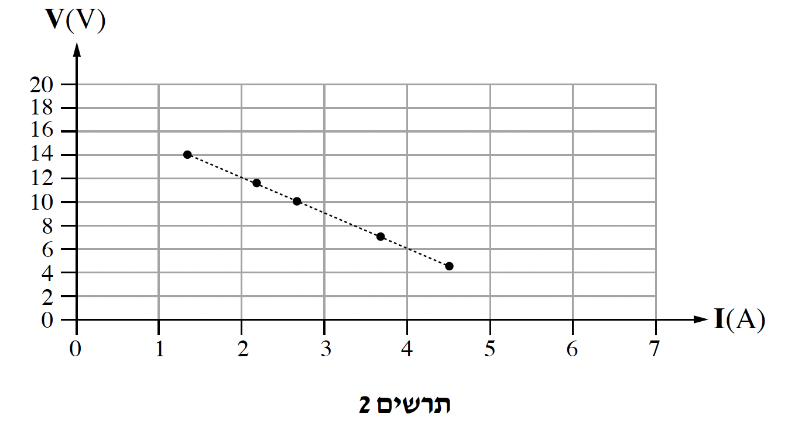
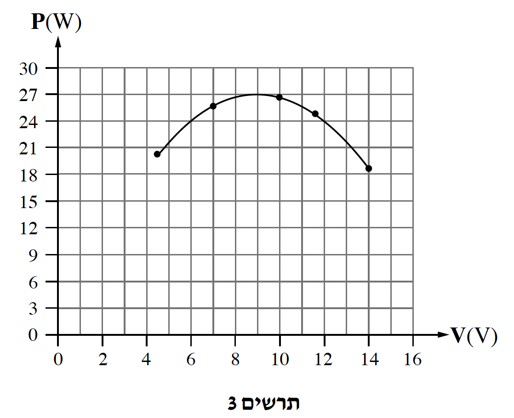
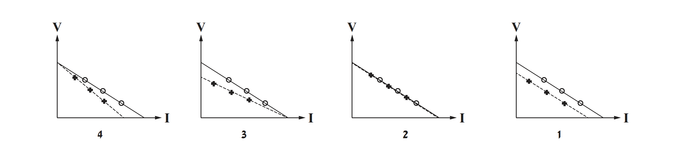

תלמידות הרכיבו את המעגל החשמלי המתואר בתרשים 1 מן הרכיבים האלה: מקור מתח שהכא"מ שלו ε והתנגדותו הפנימית r, נגד משתנה RMN שנקודת המגע הנייד שלו היא Q, תילים מוליכים שהתנגדותם זניחה ומכשירי מדידה אידיאליים: מד מתח V ומד זרם A.

התלמידות שינו את מיקום המגע הנייד Q של הנגד המשתנה RMN. בכל פעם רשמו את הוריית מד המתח V ואת הוריית מד הזרם A. התלמידות סרטטו גרף של מתח ההדקים V כפונקצייה של הזרם I (ראו תרשים 2).
היעזרו בגרף שבתרשים 2 ומצאו את הכא"מ של מקור המתח ε, ואת התנגדותו הפנימית r.
(7 נקודות)
התלמידות חישבו את ההספק המנוצל בכל אחת מן המדידות וסרטטו גרף של ההספק המנוצל P כתלות במתח ההדקים V (ראו תרשים 3).

הראו שהביטוי הכללי של ההספק המנוצל P כפונקצייה של מתח ההדקים V הוא:
(8 נקודות)
התלמידות רצו להשתמש בנגד RMN במעגל זה כגוף חימום שבאמצעותו אפשר לחמם מים.
הן מיקמו את המגע הנייד Q של הנגד המשתנה RMN כך שהמים יתחממו בזמן הקצר ביותר.
חשבו את ההתנגדות RQN במצב זה. פרטו את חישוביכם.
(6 נקודות)

לפניכם שני היגדים. עבור כל היגד קבעו אם הוא נכון או לא נכון, ונמקו את קביעותיכם.
מעמידים את המגע הנייד Q כך שהמים יתחממו בזמן הקצר ביותר.
במצב זה נצילות מקור המתח היא מקסימלית.
אפשר למדוד הספק ביחידות eVs (אלקטרון-וולט לשנייה).
(7 נקודות)
התלמידות ביצעו את הניסוי פעם נוספת עם מד זרם שהתנגדותו לא זניחה. נקודות המגע של המגע הנייד Q בנגד המשתנה היו זהות בשני הניסויים.
בתרשים שלפניכם ארבעה גרפי פיזור 1-4 המתארים את המדידות של שני הניסויים, באופן הזה:
- המדידות של הניסוי הראשון (מד זרם אידיאלי) מסומנות ב-"○" וקו המגמה הוא קו רציף.
- המדידות של הניסוי השני (מד זרם שהתנגדותו לא זניחה) מסומנות ב-"+" וקו המגמה הוא קו מקווקו.

קבעו איזה גרף מתאר בצורה הטובה ביותר את תוצאות המדידות. נמקו את קביעתכם.
(5.33 נקודות)